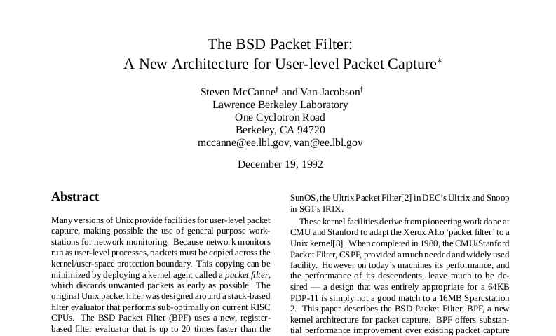
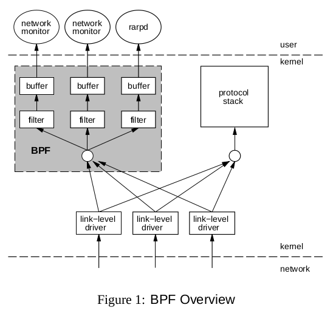
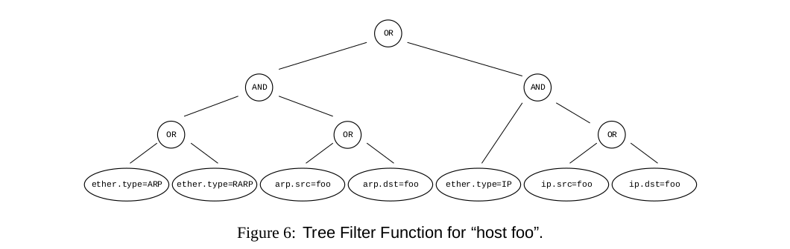
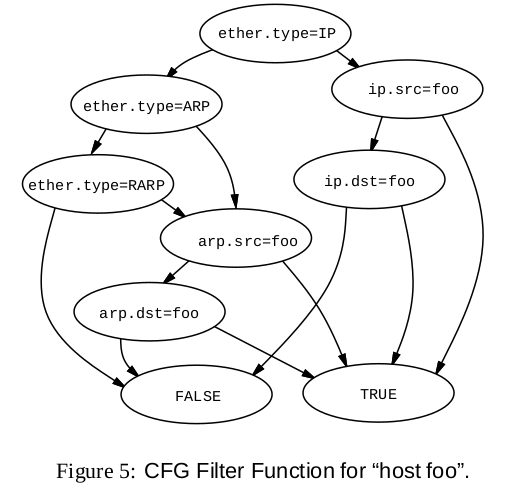
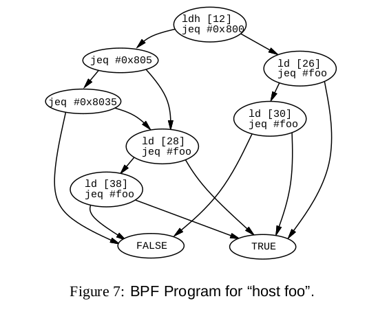
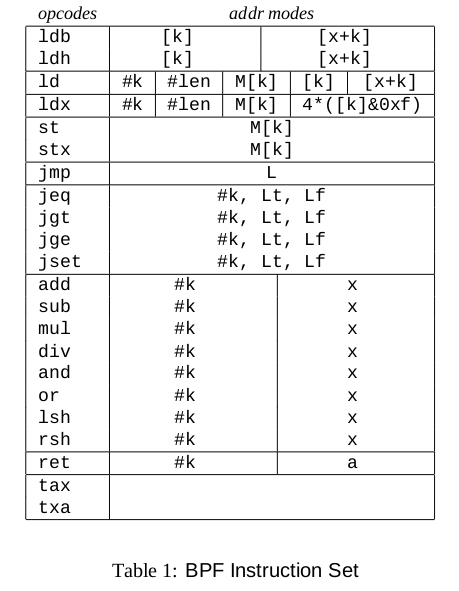
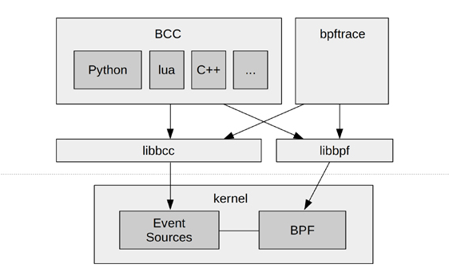

BSD Packet Filter
Intial version based on following paper later came to be known as classic BPF

Paper Link
tcpdump demo
Commands:
| tcpdump | sudo tcpdump -XX -i lo 'ip and tcp' |
| tcp server | nc -t -l -p 4444 |
| tcp client | nc -t localhost 4444 |
Components of BPF
NetworkTap
collects copies of packets from network device drivers & delivers them to listening applications
PacketFilter
decides if the packet shouild be accepted and how much of it should be copied

Optimizations against existing implementations
- Alignment
- Merge NetworkTap & Filter
- Introduce buffering
- Register based implementation
- Directed acyclic control flow graph(CFG) against boolean expression tree
Tree based filter 
- 7 comparision predicates
- 6 boolean operators
Directed acyclic control flow graph (CFG) based
|  |  |
- Max 5 comparisions
BPF Pseudo Machine
|
 |
Modern day BPF
| Classical BPF (cBPF) | Extended BPF (eBPF) |
|---|---|
| Network packet filtering, eventually seccomp | More registers, JIT compiler (flexible/faster), verifier |
| Filter Expressions → Bytecode → Interpret | Attach on Tracepoint/Kprobe/Uprobe/USDT |
| Small, in-kernel VM. Register based, switch | In-kernel trace aggregation & filtering |
| Control via bpf(), trace collection via BPF Maps |
eBPF Internals

It is extremely tedious to write bpf program by hand

- Front ends like BCC, bpftrace, ply help to create the bpf programs
bpftrace
- OneLiners:
trace all the open calls
sudo bpftrace -e 'tracepoint:syscalls:sys_enter_open* { @[probe] = count(); }'
…
- script
- sudo ./bpftrace/tools/opensnoop.bt
BEGIN
{
printf("Tracing open syscalls... Hit Ctrl-C to end.\n");
printf("%-6s %-16s %4s %3s %s\n", "PID", "COMM", "FD", "ERR", "PATH");
}
tracepoint:syscalls:sys_enter_open,
tracepoint:syscalls:sys_enter_openat
{
@filename[tid] = args->filename;
}
tracepoint:syscalls:sys_exit_open,
tracepoint:syscalls:sys_exit_openat
/@filename[tid]/
{
$ret = args->ret;
$fd = $ret > 0 ? $ret : -1;
$errno = $ret > 0 ? 0 : - $ret;
printf("%-6d %-16s %4d %3d %s\n", pid, comm, $fd, $errno,
str(@filename[tid]));
delete(@filename[tid]);
}
END
{
clear(@filename);
}
bcc
- sudo ./bcc/tools/opensnoop.py
- sudo ./bcc/tools/opensnoop.py -x
- sudo ./bcc/tools/execsnoop.py
bcc programming
- Restrictions:
- No loops or kernel function calls
- Only use bpf_*kernel helper functions and some compiler built-ins
- All memory reads using bpf_probe_read()
- Memory can only be read to BPF stacks or BPF maps. Stack for storing small objects and map for large
- 3 ways to output data from kernel to user:
- BPF_PERF_OUTPUT()
- BPF_HISTOGRAM() or other BPF maps
- bpf_trace_printk()
hello_world.py
#!/usr/bin/python
from bcc import BPF
b = BPF(text="""
int kprobe__do_nanosleep()
{
bpf_trace_printk("Hello, World!\\n");
return 0;
}""");
b.trace_print()
#!/usr/bin/python
from bcc import BPF
# BPF program
b = BPF(text="""
struct data_t {
u64 ts;
u32 pid;
};
BPF_PERF_OUTPUT(events);
int kprobe__do_nanosleep(void *ctx) {
struct data_t data = {};
data.pid = bpf_get_current_pid_tgid();
data.ts = bpf_ktime_get_ns() / 1000;
events.perf_submit(ctx, &data, sizeof(data));
return 0;
};
""")
# header
print("%-18s %-6s %s" % ("TIME(s)", "PID", "CALL"))
# process event
def print_event(cpu, data, size):
event = b["events"].event(data)
print("%-18.9f %-6d Hello, World!" % ((float(event.ts) / 1000000),
event.pid))
# loop with callback to print_event
b["events"].open_perf_buffer(print_event)
while 1:
try:
b.perf_buffer_poll()
except KeyboardInterrupt:
exit()
Readings
https://qmonnet.github.io/whirl-offload/2016/09/01/dive-into-bpf/
https://blog.cloudflare.com/bpf-the-forgotten-bytecode/
https://danielmiessler.com/study/tcpdump/
[A thorough introduction to eBPF](https://lwn.net/Articles/740157/)
https://github.com/iovisor/bcc/blob/master/docs/tutorial.md
https://netflixtechblog.com/netflix-at-velocity-2015-linux-performance-tools-51964ddb81cf
http://www.brendangregg.com/ebpf.html
https://medium.com/@beatrizmrg/network-security-for-microservices-with-ebpf-bis-478b40e7befa
FIN